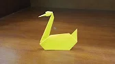

Origami Designs
Interesting Facts about a camel:
- Camels have three sets of eyelids and two rows of eyelashes to keep sand out of their eyes
- Camels will not damage their mouths if they eat thorny twigs and other items which might cause injury to other animals
- A camel’s nostrils are amazing. They retain water vapor which can be returned to the body when necessary, but they can also be closed if there is too much sand or wind blowing
Interesting Facts about a dog:
- Bloodhounds can follow tracks that are over 300 hours old and can stay on a trail for over 130 miles
- Dogs can be trained to to detect cancer and other diseases in humans
- All puppies are born deaf. As they get older, they can hear 4 times better than humans can

Interesting Facts about a goose:
- Geese can see UV light
- Geese also have the ability to control each of their eyes independently
- geese are able to sleep with one eye open! They can shut down one half of their brain to rest, and can even adjust how deeply they sleep by how wide their eye is open or closed
Interesting Facts about a sea horse:
- Their eyes work independently of one another. They can even keep one eye looking behind them
- Seahorses use camouflage and can change colour and grow little lumps and bumps to match their surroundings
- Seahorses propel themselves by using a small fin on their back that flutters up to 35 times per second

Interesting Facts about a swan:
- Swans have both beauty and brains. Studies showed that they can remember behavioral patterns and faces and know who was good to them and who wasn’t
- Swans can fly as fast as 60 miles per hour
- The fear of swans is known as kiknophobia or cygnophobia